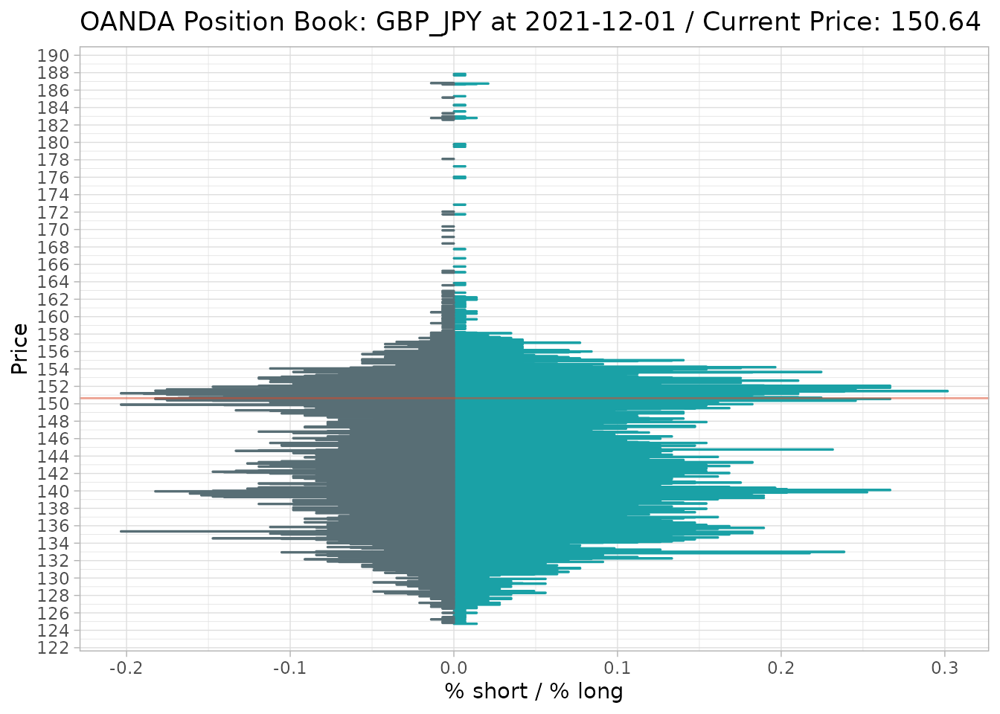

About OANDA fxTrade
ichimoku provides an R language interface to the OANDA fxTrade API.
OANDA is a primary source of foreign exchange data used by investors, corporations and governments globally. The API can be used for retrieving historical and live streaming price data for major currencies, metals, commodities, government bonds and stock indices.
As an example of available financial data: OHLC prices for major forex pairs can be obtained from the start of 2005 with granularity ranging from 5 seconds to monthly. For the total list of over 120 covered instruments please refer to the Available Instruments section below.
Please note that ‘OANDA’ and ‘fxTrade’ are trademarks owned by OANDA Corporation, an entity unaffiliated with the ichimoku package, its authors or copyright holders.
Registering with OANDA
The OANDA fxTrade API, as distinct to other OANDA data sources, is based upon its retail / professional trading offering of the same name. As such, access to the API requires an fxTrade account with OANDA and agreement to their API terms of use.
Registering for a ‘demo’ or ‘practice’ account is entirely free at the time of writing and provides full access to the API. For registering an account, the following URL may be used: https://www.oanda.com/forex-trading/.
After successful registration, a link can be found on your OANDA fxTrade account profile page ‘Manage API Access’ (My Account -> My Services -> Manage API Access). From there, a personal access token to use with the OANDA API can be generated, as well as revoked. This access token will enable all the OANDA functions in this package.
Setting your OANDA API Key
If the ‘keyring’ package is installed, the OANDA API key (personal
access token) can be set once and saved in your system credential store
by using oanda_set_key(). This will enable it to be
retrieved automatically for all subsequent sessions.
Separate keys can be set for practice and live accounts; please choose the correct account type when prompted.
If an access token is revoked and re-generated, please remember to
set the API key again through the oanda_set_key()
function.
As an alternative, the package looks for an environment variable
OANDA_API_KEY. If present, this will be taken to be the
OANDA API key, irrespective of type of account, and in precedence to
keys stored using ‘keyring’.
Using a Live Account
If you are using an access token for a live (real money) account, you
will want to call oanda_switch() at the beginning of each
session; this switches the default server from the practice server to
the live server. Settings will only persist until the end of the
session.
library(ichimoku)
oanda_switch()
#> Default OANDA server switched to 'live'Note: this package only contains functions for retrieving available instruments and price data. It does not contain code to implement any trading capability whatsoever. Please be aware however, that a personal access token can be used (outside of this package) for all operations on your account including placing orders and trades, and appropriate precautions should be taken when using your live account token.
The OANDA Functions
All of the OANDA functions in the package are prefixed by ‘oanda’ for clarity.
Functions may be called interactively without any arguments,
e.g. oanda_stream() or oanda_view(), in which
case you will be further prompted to enter required arguments; as
opposed to when specifying such arguments normally, these should be
entered unquoted i.e. without any surrounding ““.
For all functions, the ‘instrument’ argument is case-insensitive and
the delimiter can be either ’_’ or ‘-’, such that both
oanda("USD_JPY") and oanda("usd-jpy") would be
acceptable.
oanda()
Retrieve pricing data from the OANDA fxTrade API.
The arguments to the function are phrased identically to that of the API itself where relevant:
-
instrumentstring containing the base currency and quote currency delimited by ’_’ or ‘-’ (e.g. “USD_JPY” or “usd-jpy”). Use theoanda_instruments()function to return a list of all valid instruments -
granularity[default “D”] the granularity of the price data to fetch, one of “M”, “W”, “D”, “H12”, “H8”, “H6”, “H4”, “H3”, “H2”, “H1”, “M30”, “M15”, “M10”, “M5”, “M4”, “M2”, “M1”, “S30”, “S15”, “S10”, “S5” -
count(optional) the number of periods to return. The API supports a maximum of 5000 for each individual request, and defaults to 500 if not specified. If both ‘from’ and ‘to’ are specified, ‘count’ is ignored, as the time range combined with ‘granularity’ will determine the number of periods to return -
from(optional) the start of the time range for which to fetch price data, for example “2020-02-01” -
to(optional) the end of the time range for which to fetch price data, for example “2020-06-30” -
price[default “M”] the pricing component, one of “M” (midpoint), “B” (bid) or “A” (ask) -
server(optional) Specify the “practice” or “live” server according to the account type held with OANDA. If not specified, will default to “practice”, unless this has been changed byoanda_switch() -
apikey(optional) string containing the OANDA fxTrade API key (personal access token). Does not need to be specified if already stored as the environment variable ‘OANDA_API_KEY’ or byoanda_set_key(). This argument is designed for specifying a function that returns such a string rather than the string itself, which could be potentially unsecure. This allows other packages that provide secure storage of secrets to be used if preferred over ‘keyring’ -
quietlyif set to TRUE, will suppress printing of output to the console and return quietly
Note: if both from and to are specified and
the request would result in over 5000 periods being returned, the
function prompts the user to confirm if multiple requests should be
submitted. Unless the user response is “n” or “no”, the data will
proceed to be downloaded in batches and merged together into a single
dataframe. The function is safe for use in non-interactive settings as
in such cases the download will proceed automatically without
prompting.
oanda("USD_JPY", count = 3, from = "2010-11-01", price = "B")
#> time open high low close volume complete
#> 1 2010-11-01 21:00:00 80.275 81.504 80.225 80.501 22291 TRUE
#> 2 2010-11-02 21:00:00 80.504 80.956 80.460 80.617 13795 TRUE
#> 3 2010-11-03 21:00:00 80.632 81.585 80.594 81.069 22204 TRUEThe returned object is a dataframe with the following columns: ‘time’, ‘open’, ‘high’, ‘low’, ‘close’, ‘volume’ and ‘complete’.
volume should be used with caution as this reflects the trading volume registered by OANDA and may not be reflective of the broader market
complete indicates whether the data period is complete or not. If TRUE, the values are historical and not subject to change. If FALSE, the period is ongoing and the values reflect the current snapshot whilst final values may or may not differ
Important implementation notes:
Incorporates automatic adjustment of the timestamps to end of period, as is customary for financial data. This means that, for example, today’s pricing data (incomplete trading period) will have today’s date as would be expected. In contrast, the raw data from the API has a timestamp of the start of the period
The API data sometimes includes data for non-trading days with very low volumes. This is more common for older data and less so with more recent data. These may represent OTC trades that occurred over the OANDA platform, but nevertheless do not reflect market rates. These are automatically excluded from the data returned as they would otherwise produce spurious results when used with
ichimoku()
oanda_chart()
Create an updating real-time Ichimoku cloud chart. The refresh rate can be set for the chart to be updated down to every second. A plot of the ichimoku chart for the price data requested is output to the graphical device at each refresh interval.
The arguments are identical to oanda() above with the
addition of:
-
refresh[default 5] set the refresh rate of the chart in seconds, with a minimum of 1 -
limit(optional) specify a time in seconds by which to limit the session. The session will end with data returned automatically after the specified time has elapsed -
...additional parameters passed ontoichimoku()for calculating the ichimoku cloud orautoplot()to set chart parameters -
periods[default c(9L, 26L, 52L)] a vector defining the length of periods used for the cloud. This parameter should not normally be modified as using other values would be invalid in the context of traditional Ichimoku analysis
The arguments ‘from’ and ‘to’ are excluded as they are not relevant in this context.
# For a live Palladium price chart:
oanda_chart("XPD_USD")In RStudio, please switch to the plots plane to view the chart if not already in focus.
Note that the periods displayed on the chart will be fewer than the ‘count’ specified - using default cloud periods, the first 77 datapoints will be excluded. This is by design to ensure a full cloud is displayed (i.e. there are no missing values for any cloud lines at the start of the data). Please take this into account when setting the ‘count’ parameter.
On exit from the function, the ichimoku object underlying the chart will be returned (invisibly). This allows the data to be saved simply by assigning to an object.
# To access the data, simply assign the return value to an object:
cloud <- oanda_chart("XPD_USD")
oanda_studio()
Create an interactive R Shiny session for working with real-time Ichimoku cloud charts. Provides a live analysis environment where parameters may be set interactively as required. The cursor infotip provides ready access to the data directly from the chart.
As all parameters can be set interactively in-app,
oanda_studio() may be called without specifying any
arguments. Otherwise, parameters may be set beforehand in the same way
as oanda_chart().

The following additional parameters can be used to customise the behaviour of the Shiny environment:
-
new.process[default FALSE] if TRUE, will start the shiny session in a new R process, unblocking the current process and allowing continued use of the R console. -
...additional arguments passed toichimoku()for calculating the ichimoku cloud,autoplot()to set chart parameters, or the ‘options’ argument ofshiny::shinyApp() -
launch.browser[default TRUE] If TRUE, the system’s default web browser will be launched automatically after the app is started. The value of this argument can also be a function to call with the application’s URL. To use the default Shiny viewer in RStudio, please specifygetOption("shiny.launch.browser")
Downloading Data
The ichimoku object underlying the live cloud chart can be saved by selecting the Data Archive button.
This button uses archive() to save the ichimoku object
to disk. The filename will be of the form:
instrument_granularity_price.rda,
e.g. SUGAR_USD_D_A.rda. If confirmed, the file is saved to
the browser’s default download location. Note that files with the same
name are not overwritten but instead the filename is made unique.
To read back the file, use archive():
oanda_stream()
Connect to the OANDA fxTrade streaming API and stream a list of prices generated by OANDA.
The arguments are as follows:
-
instrumentthe instrument to stream data for -
display[default 8L] specify an integer to customise the number of rows to display in the console at any one time -
limit(optional) specify a time in seconds by which to limit the streaming session. The session will end with data returned automatically after the specified time has elapsed
The ‘server’ and ‘apikey’ arguments are also available if required.
# Streaming session will end with data automatically returned after 600 secs (10 mins):
data <- oanda_stream("UK10YB_GBP", limit = 600)
#> Streaming data... Press 'Esc' to return
#> time bids asks closeoutBid closeoutAsk status tradeable instrument
#> 1 2022-11-15 11:04:00 105.049, 10000 105.079, 10000 105.049 105.079 tradeable TRUE UK10YB_GBP
#> 2 2022-11-15 11:04:01 105.039, 10000 105.079, 10000 105.039 105.079 tradeable TRUE UK10YB_GBP
#> 3 2022-11-15 11:04:01 105.049, 10000 105.079, 10000 105.049 105.079 tradeable TRUE UK10YB_GBP
#> 4 2022-11-15 11:04:04 105.059, 10000 105.089, 10000 105.059 105.089 tradeable TRUE UK10YB_GBP
#> 5 2022-11-15 11:04:10 105.059, 10000 105.089, 10000 105.059 105.089 tradeable TRUE UK10YB_GBP
#> 6 2022-11-15 11:04:11 105.059, 10000 105.089, 10000 105.059 105.089 tradeable TRUE UK10YB_GBP
#> 7 2022-11-15 11:04:15 105.049, 10000 105.089, 10000 105.049 105.089 tradeable TRUE UK10YB_GBP
#> 8 2022-11-15 11:04:15 105.049, 10000 105.079, 10000 105.049 105.079 tradeable TRUE UK10YB_GBPUse the ‘Esc’ key to stop the stream and return the session data. Assign the return value to an object if you wish to retain the data.
Note: only messages of type ‘PRICE’ are processed. Messages of type ‘HEARTBEAT’ consisting of only a timestamp are discarded.
The following should be noted from the streaming API documentation:
- Pricing stream does not include every single price created for the Account
- At most 4 prices are sent per second (every 250 milliseconds) for each instrument
- If more than one price is created during the 250 millisecond window, only the price in effect at the end of the window is sent
- This means that during periods of rapid price movement, not every price is sent
- Pricing windows for different connections to the stream are not all aligned in the same way (e.g. to the top of the second)
- This means that during periods of rapid price movement, different prices may be observed depending on the alignment for the connection
oanda_quote()
A convenience function that outputs to the console the latest one-line price quote for an instrument.
The output format is as follows: instrument, timestamp, daily open, high, low and last prices, daily percentage change (from the open), and the pricing component (M for mid, B for bid, A for ask).
oanda_quote("USD_JPY")
#> USD_JPY 2021-10-05 16:29:44 open: 110.931 high: 111.564 low: 110.871 last: 111.398 %chg: 0.421 M
oanda_view()
Prints a snapshot overview of the selected market, showing the relative performance of all constituents.
The available markets are : ‘allfx’ for all available currencies, ‘bonds’ for government bonds, ‘commodities’ for commodities, ‘fx’ for major currency pairs, ‘metals’ for metals and ‘stocks’ for global stock markets. As partial matching is enabled, it is possible to type just the first letter e.g. ‘c’ for commodities.
The first retrieved timestamp and the pricing component are printed,
followed by the dataframe showing similar data to
oanda_quote() for all instruments in the selected market.
The data is ordered by the daily percentage change, from the most
positive to the most negative.
oanda_view()
Enter market [a]llfx [b]onds [c]ommodities [f]x [m]etals [s]tocks: c
#> Retrieving commodities [..........]
#> 2021-12-11 01:58:21 / M
#> open high low last %chg
#> NATGAS_USD 3.76200 3.9260 3.72400 3.85200 2.3923
#> BCO_USD 74.52600 76.2310 74.32600 75.88000 1.8168
#> WTICO_USD 70.91200 72.5540 70.55400 72.19000 1.8022
#> WHEAT_USD 7.67200 7.7710 7.57100 7.72700 0.7169
#> XPT_USD 930.20200 939.6000 924.29400 936.43800 0.6704
#> SOYBN_USD 12.63500 12.7580 12.58800 12.67800 0.3403
#> SUGAR_USD 0.19274 0.1948 0.19176 0.19334 0.3113
#> CORN_USD 5.89800 5.9410 5.86800 5.90200 0.0678
#> XCU_USD 4.30292 4.3479 4.26536 4.28361 -0.4488
#> XPD_USD 1805.14800 1815.1260 1729.61100 1752.81200 -2.8993
oanda_orders() / oanda_positions()
Provides a summary of the aggregate orders/positions held by OANDA fxTrade clients at each price level.
‘instrument’ is a required argument. The latest order/position book is retrieved unless the optional argument ‘time’ is used to specify a time for which to retrieve the order/position book.
The data is returned as a dataframe, with parameters saved as
attributes which can be viewed with look(). A chart showing
the percentage long and short orders/positions at each price level is
output to the graphical device.
df <- oanda_positions("GBP_JPY")
Please note that this feature has been implemented by OANDA only for certain major currency pairs and should be considered experimental.
Note also that for the order book, only the interquartile range of order levels is charted as some orders are placed very far from the market price. The returned dataframe contains the full order book nevertheless.
Available Instruments
The list of financial instruments available for your account may be
retrieved by oanda_instruments(). The available instruments
are also automatically populated as an input in
oanda_studio().
The list below serves as a reference only and may differ from those actually available for your account type and/or country/region.
#> name displayName type
#> 1 AU200_AUD Australia 200 CFD
#> 2 AUD_CAD AUD/CAD CURRENCY
#> 3 AUD_CHF AUD/CHF CURRENCY
#> 4 AUD_HKD AUD/HKD CURRENCY
#> 5 AUD_JPY AUD/JPY CURRENCY
#> 6 AUD_NZD AUD/NZD CURRENCY
#> 7 AUD_SGD AUD/SGD CURRENCY
#> 8 AUD_USD AUD/USD CURRENCY
#> 9 BCO_USD Brent Crude Oil CFD
#> 10 CAD_CHF CAD/CHF CURRENCY
#> 11 CAD_HKD CAD/HKD CURRENCY
#> 12 CAD_JPY CAD/JPY CURRENCY
#> 13 CAD_SGD CAD/SGD CURRENCY
#> 14 CH20_CHF Switzerland 20 CFD
#> 15 CHF_HKD CHF/HKD CURRENCY
#> 16 CHF_JPY CHF/JPY CURRENCY
#> 17 CHF_ZAR CHF/ZAR CURRENCY
#> 18 CHINAH_HKD China H Shares CFD
#> 19 CN50_USD China A50 CFD
#> 20 CORN_USD Corn CFD
#> 21 DE10YB_EUR Bund CFD
#> 22 DE30_EUR Germany 30 CFD
#> 23 ESPIX_EUR Spain 35 CFD
#> 24 EU50_EUR Europe 50 CFD
#> 25 EUR_AUD EUR/AUD CURRENCY
#> 26 EUR_CAD EUR/CAD CURRENCY
#> 27 EUR_CHF EUR/CHF CURRENCY
#> 28 EUR_CZK EUR/CZK CURRENCY
#> 29 EUR_DKK EUR/DKK CURRENCY
#> 30 EUR_GBP EUR/GBP CURRENCY
#> 31 EUR_HKD EUR/HKD CURRENCY
#> 32 EUR_HUF EUR/HUF CURRENCY
#> 33 EUR_JPY EUR/JPY CURRENCY
#> 34 EUR_NOK EUR/NOK CURRENCY
#> 35 EUR_NZD EUR/NZD CURRENCY
#> 36 EUR_PLN EUR/PLN CURRENCY
#> 37 EUR_SEK EUR/SEK CURRENCY
#> 38 EUR_SGD EUR/SGD CURRENCY
#> 39 EUR_TRY EUR/TRY CURRENCY
#> 40 EUR_USD EUR/USD CURRENCY
#> 41 EUR_ZAR EUR/ZAR CURRENCY
#> 42 FR40_EUR France 40 CFD
#> 43 GBP_AUD GBP/AUD CURRENCY
#> 44 GBP_CAD GBP/CAD CURRENCY
#> 45 GBP_CHF GBP/CHF CURRENCY
#> 46 GBP_HKD GBP/HKD CURRENCY
#> 47 GBP_JPY GBP/JPY CURRENCY
#> 48 GBP_NZD GBP/NZD CURRENCY
#> 49 GBP_PLN GBP/PLN CURRENCY
#> 50 GBP_SGD GBP/SGD CURRENCY
#> 51 GBP_USD GBP/USD CURRENCY
#> 52 GBP_ZAR GBP/ZAR CURRENCY
#> 53 HK33_HKD Hong Kong 33 CFD
#> 54 HKD_JPY HKD/JPY CURRENCY
#> 55 JP225_USD Japan 225 CFD
#> 56 JP225Y_JPY Japan 225 (JPY) CFD
#> 57 NAS100_USD US Nas 100 CFD
#> 58 NATGAS_USD Natural Gas CFD
#> 59 NL25_EUR Netherlands 25 CFD
#> 60 NZD_CAD NZD/CAD CURRENCY
#> 61 NZD_CHF NZD/CHF CURRENCY
#> 62 NZD_HKD NZD/HKD CURRENCY
#> 63 NZD_JPY NZD/JPY CURRENCY
#> 64 NZD_SGD NZD/SGD CURRENCY
#> 65 NZD_USD NZD/USD CURRENCY
#> 66 SG30_SGD Singapore 30 CFD
#> 67 SGD_CHF SGD/CHF CURRENCY
#> 68 SGD_JPY SGD/JPY CURRENCY
#> 69 SOYBN_USD Soybeans CFD
#> 70 SPX500_USD US SPX 500 CFD
#> 71 SUGAR_USD Sugar CFD
#> 72 TRY_JPY TRY/JPY CURRENCY
#> 73 UK100_GBP UK 100 CFD
#> 74 UK10YB_GBP UK 10Y Gilt CFD
#> 75 US2000_USD US Russ 2000 CFD
#> 76 US30_USD US Wall St 30 CFD
#> 77 USB02Y_USD US 2Y T-Note CFD
#> 78 USB05Y_USD US 5Y T-Note CFD
#> 79 USB10Y_USD US 10Y T-Note CFD
#> 80 USB30Y_USD US T-Bond CFD
#> 81 USD_CAD USD/CAD CURRENCY
#> 82 USD_CHF USD/CHF CURRENCY
#> 83 USD_CNH USD/CNH CURRENCY
#> 84 USD_CZK USD/CZK CURRENCY
#> 85 USD_DKK USD/DKK CURRENCY
#> 86 USD_HKD USD/HKD CURRENCY
#> 87 USD_HUF USD/HUF CURRENCY
#> 88 USD_JPY USD/JPY CURRENCY
#> 89 USD_MXN USD/MXN CURRENCY
#> 90 USD_NOK USD/NOK CURRENCY
#> 91 USD_PLN USD/PLN CURRENCY
#> 92 USD_SEK USD/SEK CURRENCY
#> 93 USD_SGD USD/SGD CURRENCY
#> 94 USD_THB USD/THB CURRENCY
#> 95 USD_TRY USD/TRY CURRENCY
#> 96 USD_ZAR USD/ZAR CURRENCY
#> 97 WHEAT_USD Wheat CFD
#> 98 WTICO_USD West Texas Oil CFD
#> 99 XAG_AUD Silver/AUD METAL
#> 100 XAG_CAD Silver/CAD METAL
#> 101 XAG_CHF Silver/CHF METAL
#> 102 XAG_EUR Silver/EUR METAL
#> 103 XAG_GBP Silver/GBP METAL
#> 104 XAG_HKD Silver/HKD METAL
#> 105 XAG_JPY Silver/JPY METAL
#> 106 XAG_NZD Silver/NZD METAL
#> 107 XAG_SGD Silver/SGD METAL
#> 108 XAG_USD Silver METAL
#> 109 XAU_AUD Gold/AUD METAL
#> 110 XAU_CAD Gold/CAD METAL
#> 111 XAU_CHF Gold/CHF METAL
#> 112 XAU_EUR Gold/EUR METAL
#> 113 XAU_GBP Gold/GBP METAL
#> 114 XAU_HKD Gold/HKD METAL
#> 115 XAU_JPY Gold/JPY METAL
#> 116 XAU_NZD Gold/NZD METAL
#> 117 XAU_SGD Gold/SGD METAL
#> 118 XAU_USD Gold METAL
#> 119 XAU_XAG Gold/Silver METAL
#> 120 XCU_USD Copper CFD
#> 121 XPD_USD Palladium CFD
#> 122 XPT_USD Platinum CFD
#> 123 ZAR_JPY ZAR/JPY CURRENCYNote: the above table is saved as internal package data and used as a fallback if the instruments API call fails. In such a case, a warning is issued once per session as subsequent calls will return the cached list.
Caching Implementation
The package retrieves the following once only during a session (the first time they are used) and caches the variables for further use:
- OANDA fxTrade API key
- OANDA fxTrade account associated with an fxTrade API key
- OANDA list of available instruments
If for any reason these become invalid or outdated, please re-load the package (or restart your R session) to enable these variables to be refreshed.
Calling oanda_switch() will also clear all cached
variables.
References
‘OANDA’ and ‘fxTrade’ are trademarks owned by OANDA Corporation, an entity unaffiliated with the ichimoku package, its authors or copyright holders.
OANDA fxTrade API developer website: https://developer.oanda.com/.